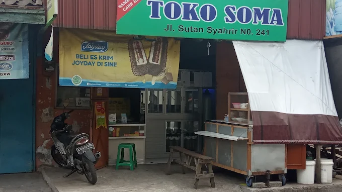
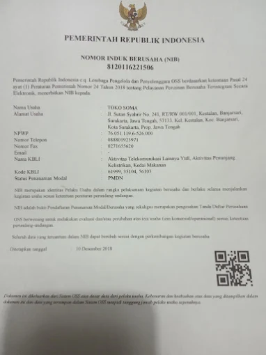

Paling laris
Isi Ulang Galon 19L
Air minum filtrasi 5 tahap + UV. Cocok untuk keluarga, kos, dan kantor.
Rp 7.000/ galon
Pesan via WA
Depot isi ulang higienis dengan filtrasi 5 tahap + steril UV. Jernih, segar, pH seimbang — diantar cepat ke rumah, kos, dan kantor di sekitar Jl. Sutan Syahrir No. 241, Kestalan, Kec. Banjarsari, Kota Surakarta, Jawa Tengah 57133 (Kestalan, Banjarsari — dekat Pasar Legi, pin akurat via Maps).
Buka setiap hari 07.00–21.00 WIB • Siap antar pagi–malam

Toko Fisik • KestalanKami bukan sekadar isi ulang. Setiap galon dicuci, dibilas, difiltrasi, dan disteril sebelum disegel. Sumber air teruji, peralatan food-grade, dan kurir yang menjaga galon tetap bersih sampai pintu rumah.

Klik kartu untuk lihat dokumen NIB asli sebagai watermark legalitas.
Temui di Toko — KestalanSaring partikel, bau, dan klorin.
Haluskan mineral, TDS rendah & rasa ringan.
Seimbangkan pH 7–7.5, lebih segar di tenggorokan.
Bunuh bakteri & virus tanpa bahan kimia.
Tutup baru, tisu steril, cek kebocoran & segel.
Galon pelanggan dicuci terpisah — tidak dicampur tanpa cuci.
Harga jujur, isi penuh, segel aman. Pesan via WhatsApp — kami balas cepat 07.00–21.00.
Air minum filtrasi 5 tahap + UV. Cocok untuk keluarga, kos, dan kantor.
Galon PET food-grade baru + tutup & segel. Siap pakai, tidak perlu tukar.
Pompa elektrik, dispenser galon bawah/atas. Tanya stok & garansi.
Jadwal mingguan, catat otomatis. Gratis antar area dekat, diskon mulai 10 galon/minggu.
*Syarat ongkir mengikuti jarak. Chat WA untuk cek estimasi 30 menit ke alamatmu.
TDS rendah, tidak eneg. Anak-anak sampai orang tua cocok.
Cuci-bilas-steril tiap galon. Tutup baru & segel setiap isi.
Armada dekat Jl. Sutan Syahrir. Telat? Kami kabari jujur, bukan janji kosong.
WA dibalas cepat 07.00–21.00. Bisa titip galon & jadwal langganan.
Testimoni asli pilihan bintang 5 — klik untuk verifikasi langsung di Google Maps.
“Tokonya lengkap yang jual juga ramah”
“penjual ramah, airnya bersih.. sudah bersertifikat..”
Menampilkan hanya testimoni bintang 5. Lihat semua ulasan di Google Maps.
Satu tempat untuk chat, telepon, atau datang langsung — Jl. Sutan Syahrir No. 241, Kestalan, Kec. Banjarsari, Kota Surakarta 57133 (dekat Pasar Legi). Buka setiap hari 07.00–21.00 WIB.
WhatsApp aktif 07.00–21.00 — klik nomor untuk chat otomatis.
Jl. Sutan Syahrir No. 241, Kota Surakarta 57133 — ketuk peta untuk navigasi langsung